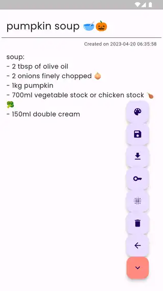

kardi notes | privacy matters
قراءة وكتابة
Application for taking notes with capabilities to view all content from any device while keeping all data accessible by you only. The app is designed to run on all modern operating systems including Windows, Linux, Android, MacOS and iOS along with a web version accessible directly from any browser.
✓ ترخيص مفتوح (GPL-3.0-only) · آخر تحديث: 2025-02-06
2.1.3الإصدار
22.4 MBالحجم
GPL-3.0-onlyالرخصة
Open in Kanzتحميل APK (22.4 MB)
Download APK
SHA-256: 97571a5911e1a1428cb11c0af93cb1bfcfe3ded70550888e5ae845b202bd1642

امسح الكود لفتح صفحة التطبيق
Scan to open this app page
لو كنز مش متثبت عندك: نزّل متجر كنز.
Not installed? Get the Kanz store.